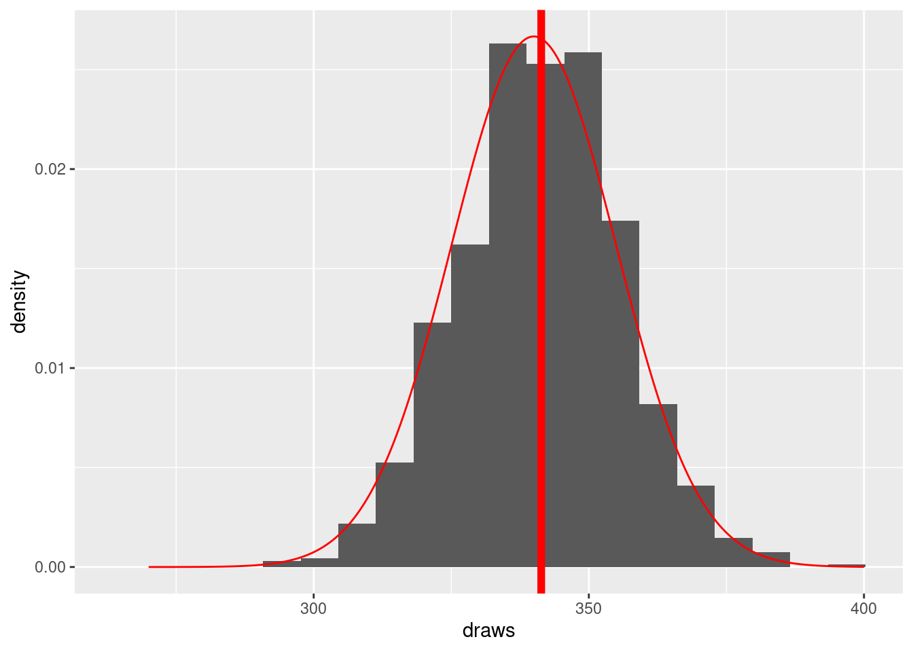
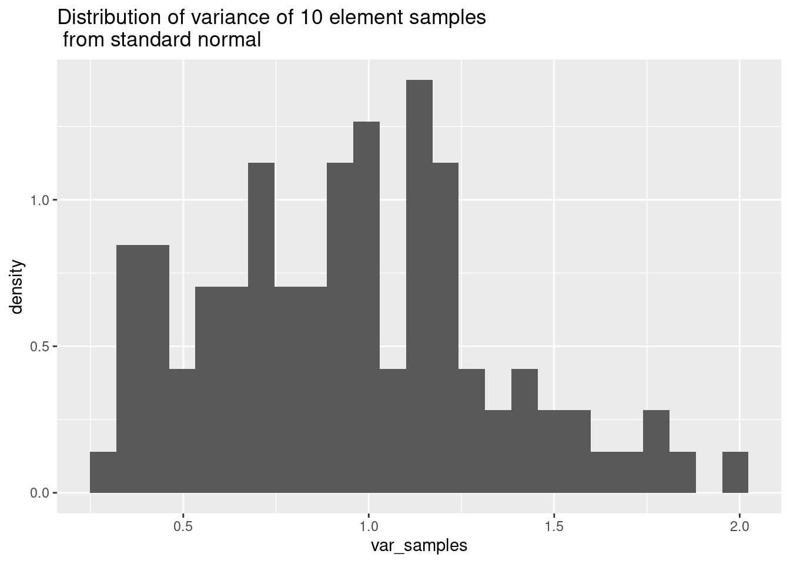
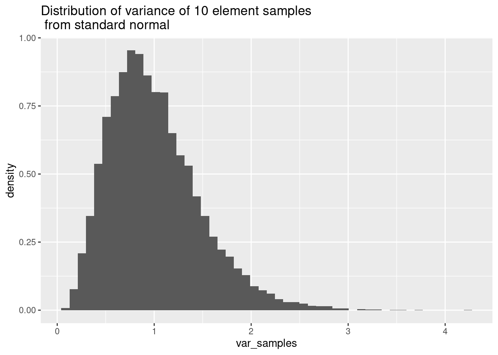
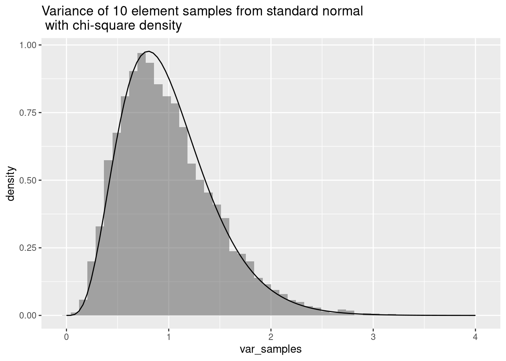

── Attaching core tidyverse packages ──────────────────────── tidyverse 2.0.0 ──
✔ dplyr 1.1.2 ✔ readr 2.1.4
✔ forcats 1.0.0 ✔ stringr 1.5.0
✔ ggplot2 3.4.2 ✔ tibble 3.2.1
✔ lubridate 1.9.2 ✔ tidyr 1.3.0
✔ purrr 1.0.1
── Conflicts ────────────────────────────────────────── tidyverse_conflicts() ──
✖ dplyr::filter() masks stats::filter()
✖ dplyr::lag() masks stats::lag()
ℹ Use the conflicted package (<http://conflicted.r-lib.org/>) to force all conflicts to become errors
The normal distribution is governed by the famous bell-shaped curve.
normal <-tibble(x =seq(-3, 3, .01), y =dnorm(x, 0, 1), y2 =dnorm(x, 0, .5))plt <-ggplot(data = normal) +geom_line(aes(x = x, y = y, color ="mu=0, sd=1")) +labs(title ="The Normal Curve with Mean 0 and SD 1")plt
The two key parameters are the mean and the standard deviation, which govern the position of the peak and the “spread” of the curve respectively.
The normal curve is a probability density. This means that the chance that a number \(x\) drawn from a population with a normal distribution with mean \(\mu\) and standard deviation \(\sigma\) lies between \(a\) and \(b\) is the area under the curve between \(x=a\) and \(x=b\).
area <-pnorm(1) -pnorm(0)plt <-ggplot(data = normal) +geom_line(aes(x = x, y = y)) +geom_ribbon(aes(x = x, ymin =ifelse(x >0& x <1, 0, y), ymax = y),fill ="gray",alpha = .4 ) +labs(title =paste("Shaded area is ", format(area, nsmall =2, digits =2)))plt
In the example above, the shaded area between 0 and 1 is \(.34\). Let’s draw \(1000\) numbers from the normal distribution.
# count draws a 1000 points from a standard normal# and counts how many lie between 0 and 1# this is a binomal variable with N=1000 and p=.34count <-function() { x <-rnorm(1000, 0, 1)sum(x >=0& x <=1)}print(paste("Out of 1000 draws, ", sum(count()), " were between 0 and 1"))
[1] "Out of 1000 draws, 366 were between 0 and 1"
Now let’s do this experiment 1000 times and record the results.
draws <-replicate(1000, count())
On average, we got 341.346 values between \(0\) and \(1\), which is very close to what we’d expect.
Let’s look at a histogram of the result of these 100 draws. The vertical line indicates the mean.
hist <-ggplot() +geom_histogram(aes(x = draws, y = ..density..), bins =20) +geom_vline(xintercept =mean(draws), color ="red", linewidth =2)hist
Warning: The dot-dot notation (`..density..`) was deprecated in ggplot2 3.4.0.
ℹ Please use `after_stat(density)` instead.
To interpret what’s going on here, each draw from the normal distribution has a 34% chance of being between 0 and 1. So it’s like flipping a coin with a 34% chance of getting heads. Formally speaking, this experiment is a Bernoulli random variable with \(p=.34\).
If we repeat this N times and count how often we get a “success”, we are looking at a binomial random variable which has mean \(Np=.34N\) and variance \(Np(1-p)=.22N\). For \(N=1000\), this means we expect about 340 “successes”.
The binomial random variable with large \(N\) is very close to being a normal random variable. We can superimpose a normal curve with mean =340 and variance=220 onto our histogram.
x <-seq(270, 400, .1)y <-dnorm(x, mean =340, sd =14.96)hist <- hist +geom_line(aes(x = x, y = y), color ="red")hist

Tools for the normal distribution
The R language gives four functions for working with the normal distribution:
pnorm
qnorm
dnorm
rnorm
The density
The dnorm function gives the probability density (the bell curve).
x <-seq(-3, 3, .1)y <-dnorm(x)ggplot() +geom_line(aes(x = x, y = y)) +labs(title ="dnorm with mean zero and sd=1")
The cumulative distribution
The pnorm function returns the area under the curve from \(-\infty\) to \(x\). This is the cumulative distribution function.
x <-seq(-3, 3, .1)y <-pnorm(x)ggplot() +geom_line(aes(x = x, y = y)) +labs(title ="dnorm with mean zero and sd=1")
The pnorm function is useful because the area under the distribution curve between \(a\) and \(b\) is pnorm(b)-pnorm(a).
The quantile function
The qnorm function is the quantile function. It is the inverse of the pnorm function. It answers the question: Given p, for which \(a\) is it the case that the chance of getting a result less than or equal to \(a\) is equal to \(p\)?
p <-seq(0.01, .99, length.out =100)y <-qnorm(p)ggplot() +geom_line(aes(x = p, y = y)) +labs(title ="qnorm with mean zero and sd=1")
Another way to think of qnorm is in terms of quantiles. So qnorm(.75) is the \(x\) value that represents the 75th percentile of numbers drawn from the distribution. Since qnorm(.75)=.674, if we draw 10000 numbers from the (standard) normal distribution, 75% of them should be less than or equal to .674.
And indeed this is close:
data <-rnorm(10000)count <-sum(data < .674)print(paste(count, " draws out of 10000 are less than .674"))
[1] "7511 draws out of 10000 are less than .674"
Sampling
Finally, rnorm samples from the normal distribution. We’ve already used it a lot.
x <-seq(-3, 3, length.out =100)data <-rnorm(1000)density <-dnorm(x)ggplot() +geom_histogram(aes(x = data, y = ..density..), bins =100) +geom_line(aes(x = x, y = density), color ="red")
Sample means
An essential problem in statistics is the following.
Suppose that a population is normally distributed with unknown mean > and standard deviation. How can we estimate these parameters via .> sampling?
In other words, suppose we conduct an experiment, drawing \(n\) examples from our population. What can we learn from these \(n\) samples?
The key idea is that:
the sample mean is an estimate of the population mean
the sample variance is an estimate of the population variance
But how good are these estimates?
Let’s do an experiment, and draw 1000 samples of 10 elements from a normal population and look at the means of our samples.
# sample() returns the mean of a sample of n elementssample <-function(n =10) {mean(rnorm(n))}data <-replicate(1000, sample(10))ggplot() +geom_histogram(aes(x = data, y = ..density..), binwidth = .1) +labs(title =paste("Average sample mean=", mean(data)))
As you can see from this picture, the sample means cluster around 0, and the average of the sample averages is close to zero. But there is quite a bit of variability here – half of the averages lie between about -.2 and .2. Still, in the standard normal distribution, 50% of the data lies between .67 and .67, so the means cluster around the true mean more closely than the data does.
The standard deviation of these sample means is roughly \(.31\), which is quite a bit smaller than the standard deviation of the raw data, which is 1. So this is another piece of evidence that sample means cluster around the population mean with less variance than the individual values.
q <-quantile(data)q25 <- q["25%"]q75 <- q["75%"]print(paste("The middle 50% of the data lies between ", format(q25, digits =2, nsmall =2), " and ", format(q75, digits =2, nsmall =2)))
[1] "The middle 50% of the data lies between -0.21 and 0.21"
Statistical theory tells us that the distribution of the sample means is governed by a relative of the normal distribution called the \(t\)-distribution. There is actually a separate \(t\) distribution for each sample size. For smaller sample sizes, the \(t\) distribution is “fatter” than the normal distribution.
normal <-dnorm(seq(-3, 3, length.out =100))student <-dt(seq(-3, 3, length.out =100), df =9)ggplot() +geom_line(aes(x =seq(-3, 3, length.out =100), y = normal, color ="Normal")) +geom_line(aes(x =seq(-3, 3, length.out =100), y = student, color ="t")) +scale_color_manual(values =c("Normal"="blue", "t"="red")) +labs(title ="Normal dist vs t-dist with 9 degrees of freedom")
Furthermore, as the sample size increases:
the difference between the t and normal distributions becomes insignificant
the variation in the sample means shrinks so that any individual sample mean becomes (in all likelihood) a better measure of the population mean.
Let’s look at samples of size 50 for comparison.
data50 <-replicate(1000, sample(50))plt <-ggplot() +geom_histogram(aes(x = data50, y = ..density..), binwidth = .1) +labs(title =paste("Average sample mean for samples of size 50=", format(mean(data50), digits =2, nsmall =2)))plt
Notice that these samples cluster much more tightly around the “true” mean of zero. In fact 50% of the data lies between -.1 and .1.
The standard deviation of the sample means is .145.
q <-quantile(data50, c(.25, .75))q25 <- q["25%"]q75 <- q["75%"]print(paste("The middle 50% of the data lies between ", format(q25, digits =2, nsmall =2), " and ", format(q75, digits =2, nsmall =2)))
[1] "The middle 50% of the data lies between -0.091 and 0.11"
Sample means: summary
In our discussion above we saw that the sample means from a normal population give a good estimate of the population mean. The theory tells us the following:
the sample means are distributed randomly around the population mean
the mean of the sample means is the population mean
as the size of the sample grows, the sample means cluster more closely around the population mean
the distribution of the sample means is governed by the t-distribution, which is a “fatter” version of the normal distribution. As the size of the sample grows, the corresponding t-distribution becomes more and more like the normal distribution.
For samples of size greater than 30 or so, the sample means are essentially normally distributed.
Sample variance
What about estimating the variance of the population? Let’s draw samples from a normal distribution and see how the variance behaves. Remember that the variance (the square of the standard deviation) is always positive.
sample_var <-function(n =10) {return(var(rnorm(n)))}var_samples <-replicate(100, sample_var(10))ggplot() +geom_histogram(aes(x = var_samples, y = ..density..), bins =25) +labs(title ="Distribution of variance of 10 element samples\n from standard normal")

One thing to notice is that the distribution of the variance is not symmetric. The mean of these standard deviations is close to the true variance (namely 1) but there is a longer tail off to the right. This is more clearly seen with many more samples.
var_samples <-replicate(10000, sample_var(10))ggplot() +geom_histogram(aes(x = var_samples, y = ..density..), bins =50) +labs(title ="Distribution of variance of 10 element samples\n from standard normal")

In fact, half of the samples are between .66 and 1.3, which is not symmetric about the origin – the values are more likely to underestimate the variance but there are samples that greatly overestimate it.
The theory tells us that the variance follows a “chi-square” distribution; there is a different chi-square distribution for each sample size.
x <-seq(0, 4, length.out =100)df5 <-5*dchisq(5* x, df =5)df10 <-10*dchisq(10* x, df =10)df30 <-30*dchisq(30* x, df =30)df <-tibble(x, df5, df10, df30)ggplot(df, aes(x = x)) +geom_line(aes(y = df5, color ="df=5")) +geom_line(aes(y = df10, color ="df=10")) +geom_line(aes(y = df30, color ="df=30")) +scale_color_manual(values =c("df=5"="blue", "df=10"="red", "df=30"="orange")) +labs(title ="Chi-Square Distributions", x ="x", y ="Density")
To drive home the point, let’s superimpose the chi-square density with 10 degrees of freedom on the histogram of samples.
x <-seq(0, 4, length.out =100)df10 <-10*dchisq(10* x, df =10)var_samples <-replicate(10000, sample_var(10))ggplot() +geom_histogram(aes(x = var_samples, y = ..density..), bins =50, alpha = .5) +labs(title ="Variance of 10 element samples from standard normal\n with chi-square density") +geom_line(aes(x = x, y = df10))

Sample variance: summary
The sample variances cluster around the true variance.
Their mean clusters around the true variance
The sample variances (for samples of size \(k\)) are distributed by a chi-square distribution with \(k-1\) degrees of freedom.
The relevant version of this distribution in the R language is k*dchisq(x/k,df=k). This is because the dchisq(x, df=k) function computes a chi-square variable with mean k and we want one with mean 1.